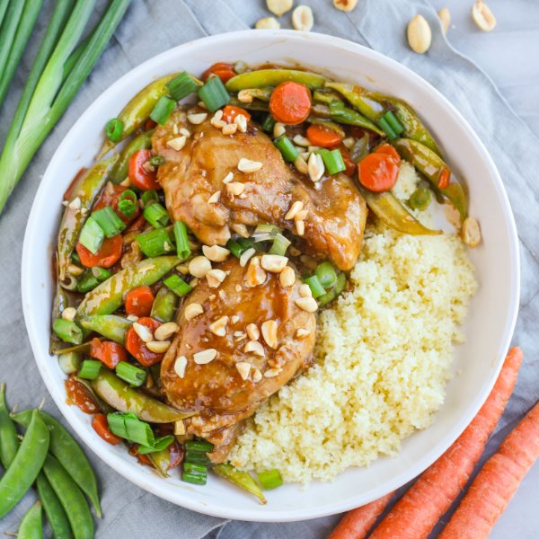

Orange-Spiced Chicken with Snap Peas, Carrots, Couscous & Peanuts

Nutrition (per serving)
699.5 kcalCalories
58.8 gProtein
69.7 gCarbs
22.2 gFat
Full nutrition table
| Calories | 699.5 kcal |
| Total fat | 22.2 g |
| Saturated fat | 4.5 g |
| Trans fat | 0.1 g |
| Cholesterol | 213.2 mg |
| Sodium | 379.8 mg |
| Carbohydrates | 69.7 g |
| Fiber | 11.3 g |
| Sugars | 21.3 g |
| Protein | 58.8 g |
| Potassium | 1400.4 mg |
| Calcium | 132.7 mg |
| Iron | 5.3 mg |
| Vitamin A | 429.6 IU |
| Vitamin C | 61.1 mg |
| Vitamin D | 2.3 IU |
Cookware
Ingredients
- 4 mediumcarrots
- 16 fl ozchicken or vegetable broth
- 2 lbchicken thighs, boneless skinless
- 4 clovesgarlic
- 1 small bunchgreen onions (scallions)
- 1orange
- ¼ cuppeanuts, roasted unsalted
- 1 (8 oz) pkgsugar snap peas
- 1 cupwhole wheat couscous
- black pepper
- brown sugar
- cayenne pepper
- cinnamon, ground
- cloves, ground
- cornstarch
- extra virgin olive oil
- ketchup
- rice vinegar
- salt
- soy sauce
Steps
- In a small saucepan, bring broth to a boil. Remove from heat, add couscous, and stir; cover and let stand for 10 minutes.16 fl oz (2 cups) chicken or vegetable broth
1 cup whole wheat couscous - Meanwhile, wash and dry the fresh produce.1 orange
4 medium carrots
1 (8 oz) pkg sugar snap peas
1 small bunch green onions (scallions) - Preheat a large skillet over medium-high heat.
- While the skillet heats up, pat the chicken dry with paper towels and place on a plate; season with salt and pepper on both sides.2 lb chicken thighs, boneless skinless
½ tsp salt
¼ tsp black pepper - Once the skillet is hot, add oil and swirl to coat the bottom. Add chicken to the skillet; cook, turning once, until golden brown on each side, 6-7 minutes (chicken will not be cooked through all the way).2 tbsp extra virgin olive oil
- Meanwhile, zest and juice orange into a small bowl.
- Peel and mince garlic; add to the bowl with the orange juice.4 cloves garlic
- Add water, sugar, soy sauce, ketchup, vinegar, and spices to the bowl; whisk to combine the sauce and set aside.½ cup water
3 tbsp brown sugar
2 tbsp soy sauce
2 tbsp ketchup
4 tsp rice vinegar
¼ tsp cayenne pepper
¼ tsp cinnamon, ground
¼ tsp cloves, ground - Peel, trim, and thinly slice carrots. Add carrots and snap peas to the skillet with the chicken.
- Add sauce to the skillet and bring to a boil over high heat (reserve bowl for later use). Reduce heat and simmer, turning thighs occasionally, until chicken is cooked through and veggies are tender, about 10 minutes.
- While the chicken cooks, roughly chop peanuts.¼ cup peanuts, roasted unsalted
- Trim green onions and cut into ¼-inch pieces.
- In the reserved bowl, make a slurry by whisking water with cornstarch until smooth. Add to the skillet in a steady stream, while stirring constantly; continue to simmer, until sauce thickens, 1-2 minutes. Remove from heat.2 tbsp water
4 tsp cornstarch - To serve, divide chicken-vegetable sauté and couscous between plates or bowls. Top with peanuts and green onion. Enjoy!